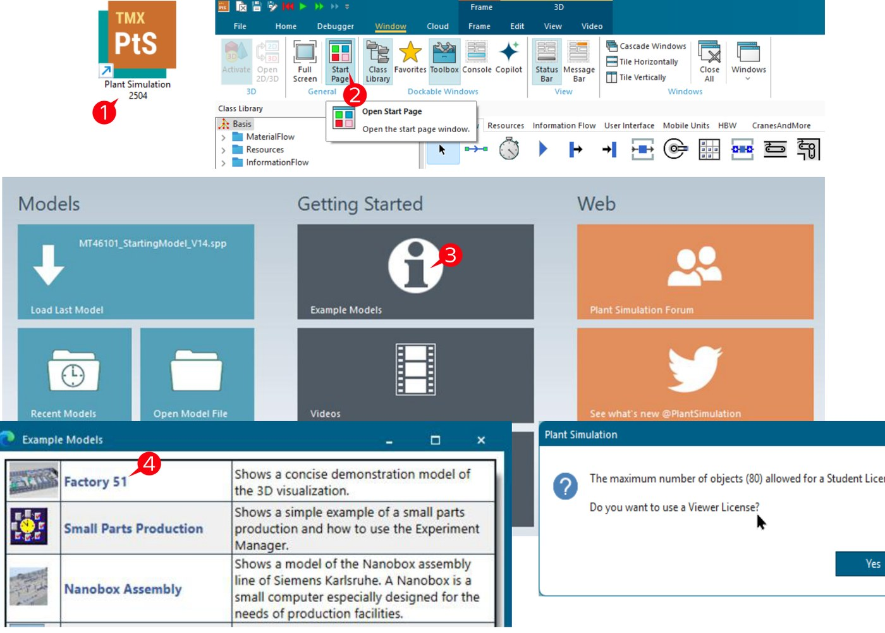
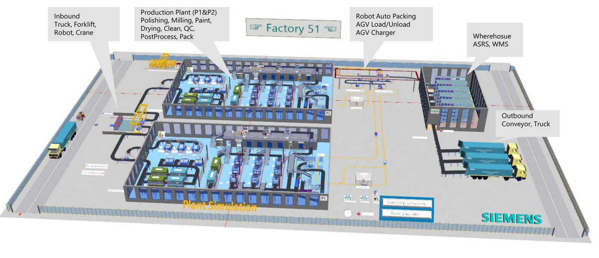
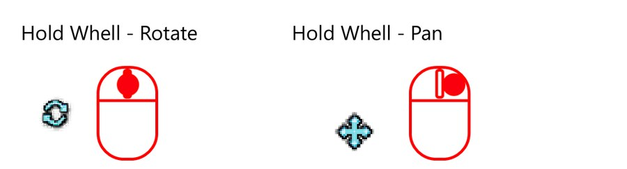
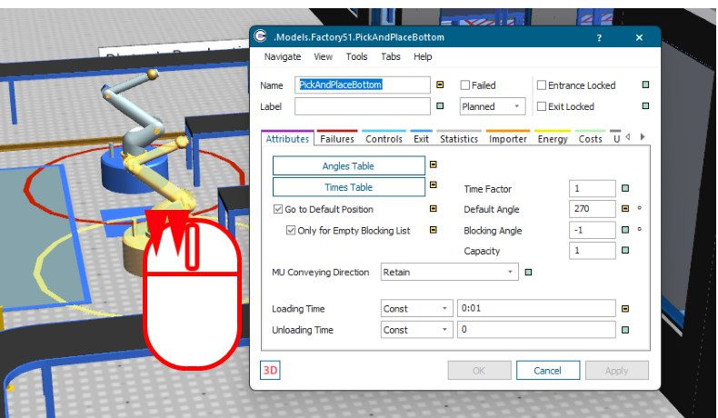
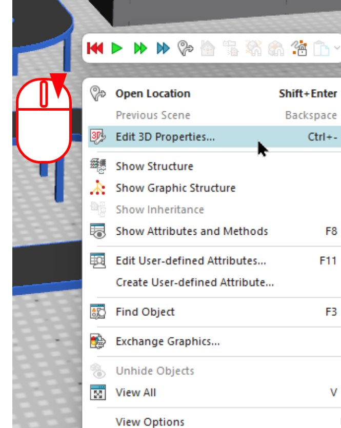
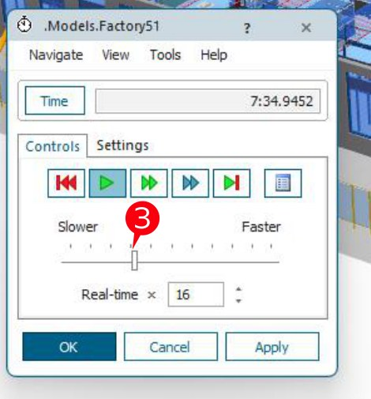

2. เริ่มต้นใช้งาน Plant Simulation และ Basic User Interface
วัตถุประสงค์การเรียนรู้
- จำตำแหน่งและหน้าที่ของส่วนประกอบหลักในโปรแกรมได้
- เปิดตัวอย่างโมเดล Factory 51 จาก Start Page ได้ด้วยตัวเอง
- ควบคุมมุมมอง 3 มิติด้วยเมาส์/คีย์บอร์ด และโต้ตอบกับ Object ด้วย Click/Double-click/Right-click ได้
- เข้าใจแนวคิด Event-Controlled Simulation และควบคุมการรันผ่าน EventController ได้
วิดีโอสาธิต: เปิดโปรแกรมและหน้า Start Page
วิดีโอนี้สาธิตการเปิดโปรแกรม Plant Simulation ครั้งแรก ไปจนถึงหน้า Start Page ที่รวมทางลัดสำคัญ (Load Last Model, Recent Models, Example Models) — ดูก่อนแล้วค่อยอ่านรายละเอียดแต่ละส่วนด้านล่าง
ส่วนประกอบหลักของโปรแกรม
| ส่วนประกอบ | หน้าที่ |
|---|---|
| Class Library | คลัง Object ทั้งหมดที่ใช้สร้างโมเดล แบ่งเป็นหมวด เช่น MaterialFlow, InformationFlow, Resources, MUs |
| Frame | พื้นที่วาดโมเดล (เหมือน Canvas) ลาก Object มาวางและเชื่อมต่อกันที่นี่ — โมเดลหนึ่งไฟล์มีได้หลาย Frame ซ้อนกัน |
| Toolbar | ปุ่มควบคุมการรันซิมูเลชัน (Start, Reset, Speed) |
| Console | แสดงข้อความ error/log ระหว่างรันหรือเขียนโค้ด SimTalk |
| Navigator / Class Library Explorer | แผงต้นไม้ทางซ้าย ไล่ดูโครงสร้างโมเดลทั้งหมดและ Class Library |
| Attribute window | เปิดจากดับเบิลคลิก Object — ตั้งค่าคุณสมบัติเฉพาะของ Object นั้น เช่น Interval, ProcTime |
เปิดตัวอย่างโมเดล Factory 51
วิธีที่เร็วที่สุดในการทำความคุ้นเคยกับหน้าตาโปรแกรมคือเปิดโมเดลตัวอย่างที่ติดมากับโปรแกรมดูก่อน — Factory 51 คือโมเดลสาธิตที่ Siemens แนบมาให้ทุกเครื่องที่ติดตั้ง Plant Simulation ใช้แสดงภาพ 3D ของโรงงานแบบครบวงจร
- เปิดโปรแกรม Plant Simulation
- ไปที่เมนู
Window → Start Page - ในหน้า Start Page ไปที่คอลัมน์
Getting StartedคลิกExample Models - ในรายการที่เปิดขึ้นมา คลิกเลือก
Factory 51 - ถ้าเครื่องใช้ Student License จะมีหน้าต่างแจ้งเตือนว่าโมเดลนี้เกิน 80 Objects (เกินสิทธิ์ Student License) ให้คลิก
Yesเพื่อเปิดแบบ Viewer License แทน

"Remote access is not allowed with this license" ทันที นี่คือข้อจำกัดจริงของ
Viewer/Student License ที่ควรรู้ไว้ — โมเดลขนาดนี้ต้องเปิดผ่าน GUI เท่านั้น จะควบคุมจากภายนอกแบบที่สอนในบท Advanced ไม่ได้จนกว่าจะมี License เต็ม
ภาพรวมโมเดล Factory 51
เมื่อเปิดขึ้นมาแล้ว จะเห็นภาพ 3D ของโรงงานจำลองที่มีครบทุกโซนตั้งแต่รับวัตถุดิบจนถึงส่งสินค้าออก — เป็นตัวอย่างที่ดีของสิ่งที่พูดถึงในบทที่แล้ว เรื่อง "พฤติกรรมของทั้งระบบ" ที่มองเห็นได้ด้วย 3D Visualization/3D Animation

| โซน | ประกอบด้วย |
|---|---|
| Inbound | Truck, Forklift, Robot, Crane — รับวัตถุดิบเข้าสู่โรงงาน |
| Production Plant (P1 & P2) | Polishing, Milling, Paint, Drying, Clean, QC, PostProcess, Pack — สองสายการผลิตขนาน |
| Robot Auto Packing | AGV Load/Unload, AGV Charger — หุ่นยนต์บรรจุภัณฑ์และสถานีชาร์จ AGV |
| Warehouse | ASRS (Automated Storage/Retrieval System), WMS — คลังสินค้าอัตโนมัติ |
| Outbound | Conveyor, Truck — ส่งสินค้าสำเร็จรูปออกจากโรงงาน |
ควบคุมมุมมอง 3 มิติด้วยเมาส์และคีย์บอร์ด
ก่อนเดินสำรวจโมเดล Factory 51 ควรคุ้นเคยกับการควบคุมกล้อง 3D ก่อน — ใช้ได้ทั้งเมาส์และคีย์บอร์ดร่วมกัน
| การควบคุม | ผลลัพธ์ |
|---|---|
| เลื่อนลูกกลิ้งเมาส์ (Scroll Wheel) | ซูมเข้า/ออก — กด Shift ค้างเพื่อซูมเร็ว, กด Ctrl ค้างเพื่อซูมช้า |
| กดลูกกลิ้งเมาส์ค้าง + ลาก | หมุนมุมมอง (Rotate) รอบจุดศูนย์กลางฉากหรือรอบ Object ที่เลือก |
กด Ctrl + ลูกกลิ้งเมาส์ค้าง + ลาก | เลื่อนมุมมองแนวขนาน (Pan) |

| ปุ่มคีย์บอร์ด | ผลลัพธ์ |
|---|---|
W / S | เดินเข้าใกล้ / เดินออกห่างจาก Object ในมุมมอง 3D |
Q / E | เดินไปทางซ้าย / ทางขวาของ Object |
A / D | หันซ้าย / หันขวา |
Z / Shift + Z | ลดระดับตัวเอง / ยกระดับตัวเองขึ้น |
โต้ตอบกับ Object: Click / Double-click / Right-click
สามวิธีหลักในการโต้ตอบกับ Object ในมุมมอง 3D (และ 2D เช่นกัน) — ใช้บ่อยที่สุดตลอดทั้งคอร์สนี้
| การกระทำ | ผลลัพธ์ |
|---|---|
| Click (คลิกซ้ายครั้งเดียว) | เลือก Object (Select) |
| Double Click | เปิด Object Window — หน้าต่าง Attribute ของ Object นั้น |
| Right Click | เปิดเมนู Quick tools — ทางลัดไปยังคำสั่งที่ใช้บ่อย เช่น Edit 3D Properties, Show Attributes and Methods (F8), Find Object (F3) |
| Double Click บน Object ที่มี Frame ซ้อนอยู่ข้างใน | เปิด Frame ข้างในนั้น (กด Shift + Enter เพื่อย้อนกลับออกมา) |


View → Reset Window Layout
(หรือใกล้เคียง แล้วแต่เวอร์ชัน) เพื่อคืนค่าเลย์เอาต์เริ่มต้น
Time-Oriented Simulation และ Event-Controlled Simulation
Plant Simulation เป็นโปรแกรมจำลองแบบ discrete, event-controlled — หมายความว่าโปรแกรมจะตรวจสอบเฉพาะ "จุดเวลาที่มีเหตุการณ์เกิดขึ้นจริง" ในโมเดลเท่านั้น (สอดคล้องกับ Discrete Event Simulation ที่พูดถึงในบทที่ 1) ไม่ใช่คำนวณทุกช่วงเวลาต่อเนื่อง ควบคุมการรันทั้งหมดผ่าน Object EventController ตัวเดียว
- คลิกที่ปุ่ม
Start/Stop Simulationเพื่อเริ่ม/หยุดการจำลอง - ดับเบิลคลิกที่
EventControllerเพื่อเปิดหน้าต่างควบคุม (แท็บ Controls/Settings) - ปรับตัวเลื่อน
Slower ↔ Fasterเพื่อปรับความเร็วของแบบจำลอง แล้วสังเกตพฤติกรรมการทำงาน
